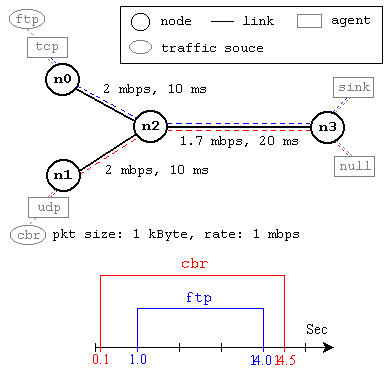

Laboratorul 1
Citim tutoriale și rulăm exemple. Textul de mai jos este bazat pe ghidul NS by example de J. Chung și M. Claypool.
Introducere în ns2
NS-2 este un simulator bazat pe evenimente dezvoltat la UC Berkely scris in C++ si OTcl. NS-2 este în primul rând util pentru simularea rețelelor LAN și WAN, dar și pentru rețele wireless, adhoc, de senzori. Cu toate ca NS este destul de ușor de utilizat pentru avansați, poate părea dificil la prima utilizare, deoarece există puține manuale user-friendly. Chiar dacă există o mulțime de documente scrise de către dezvoltatori, care conțin explicații aprofundate ale simulatorului, acestea sunt scrise pentru utilizatorii NS-2 avansați. Această secțiune oferă o idee de bază a modului în care funcționează simulatorul, cum se pregătește o simulare, unde se găsesc componentele interne, cum se configurează componentele de rețea, etc. În principal se prezintă exemple simple și explicații bazate pe experimente simple, familiare unui student care a luat un curs introductiv de rețele.
Limbajul OTcl
NS-2 este în esență un interpretor de OTcl cu biblioteci de obiecte C++ specializate în simularea rețelelor. Este necesar să se cunoască sumar programarea în OTcl pentru a utiliza NS-2. Această secțiune prezintă un exemplu OTcl care ilustrează ideea de bază a programării în OTcl, exemplu importat din manualul oficial NS-2. Această secțiune, ca și secțiunile următoare presupun că cititorul a instalat NS-2, și este familiarizat cu shell și cu C++.
Primul exemplu este un script general OTcl, care arată modul de declarare o procedură și a o apela, modul de a atribui valori variabilelor, și modul de a implementa o buclă. OTcl este de fapt extensia orientată obiect a Tcl(pronunțat “tickle”), relația dintre Tcl și Otcl este la fel ca și cea dintre C și C++, dar în acest laborator rareori sunt folosite obiectele în OTcl. Pentru a rula acest script rulați “ns ex-tcl.tcl” la promptul shell - comanda “ns” execută NS-2 (interpretorul OTcl). Veți obține aceleași rezultate dacă tastați “tclsh ex-tcl.tcl”, în cazul în care tcl8.0 este instalat pe mașina dumneavoastră.
- ex-tcl.tcl
# Writing a procedure called "test" proc test {} { set a 43 set b 27 set c [expr $a + $b] set d [expr [expr $a - $b] * $c] for {set k 0} {$k < 10} {incr k} { if {$k < 5} { puts "k < 5, pow = [expr pow($d, $k)]" } else { puts "k >= 5, mod = [expr $d % $k]" } } } # Calling the "test" procedure created above test
În Tcl, cuvântul cheie proc este folosit pentru a defini o procedură, urmat de un nume de procedură și argumentele în acolade. Cuvântul cheie set este folosit pentru a atribui o valoare unei variabile. [Expr …] este pentru a calcula valoarea expresiei între paranteze drepte, după cuvântul cheie. Un lucru de remarcat este faptul că pentru a obține valoarea atribuită unei variabile, $ este utilizat cu numele variabilei (ca în shell). Cuvântul cheie puts imprimă șirul de caractere la consolă. Rulând exemplul de mai sus, se obține:
k < 5, pow = 1.0 k < 5, pow = 1120.0 k < 5, pow = 1254400.0 k < 5, pow = 1404928000.0 k < 5, pow = 1573519360000.0 k >= 5, mod = 0 k >= 5, mod = 4 k >= 5, mod = 0 k >= 5, mod = 0 k >= 5, mod = 4
Primul exemplu de simulare
Această secțiune prezintă un script simplu NS-2 si explica ce face fiecare linie. Exemplul este un script OTcl care creează o configurație de rețea simplă și rulează scenariul de simulare din figura de mai jos. Pentru a rula această simulare, descărcați “ns-simple.tcl” și rulați “ns ns-simple.tcl” în shell. 
Această rețea este formată din 4 noduri (n0, n1, n2, n3), așa cum se arată în figura de mai sus. Link-urile duplex între n0 și n2, și n1 și n2 au capacitatea 2Mbps[Megabit/s] și 10ms de întârziere. Link-ul duplex între n2-n3 are capacitatea de 1.7Mbps și 20ms de întârziere. Fiecare nod folosește la ieșire o coadă DropTail, a cărei mărime este de 10 pachete. Un agent “TCP” este atașat la n0, și este stabilită o conexiune la un sink TCP atașat la n3. În mod implicit, dimensiunea maximă a unui pachet pe care un agent de TCP poate genera este 1KByte. Un sink TCP generează și trimite pachete ACK către expeditor (agent TCP) și livrează la aplicație pachetele primite. Un agent UDP, care este atașat la n1 este conectat la un agent sink (LossMonitor) atașat la n3. Un agent LossMonitor doar contorizează pachetele primite. Aplicații de tio FTP și generator de trafic CBR sunt atașate la agenții TCP șiUDP respectivi, iar CBR este configurat pentru a genera pachete de 1000 bytes la rata de 1Mbps. Aplicația CBR este setată să pornească de la 0.1s, și să se oprească la 14,5 sec, iar FTP pornește de la 1.0s și se oprește la 14.0s.
- ns-simple.tcl
#Create a simulator object set ns [new Simulator] #Define different colors for data flows (for NAM) $ns color 1 Blue $ns color 2 Red #Open the NAM trace file set nf [open out.nam w] $ns namtrace-all $nf #ns trace file set tracefd [open simple.tr w] $ns use-newtrace $ns trace-all $tracefd #Create four nodes set n0 [$ns node] set n1 [$ns node] set n2 [$ns node] set n3 [$ns node] #Create links between the nodes $ns duplex-link $n0 $n2 2Mb 10ms DropTail $ns duplex-link $n1 $n2 2Mb 10ms DropTail $ns duplex-link $n2 $n3 1.7Mb 20ms DropTail #Set Queue Size of link (n2-n3) to 5 $ns queue-limit $n2 $n3 5 #Give node position (for NAM) $ns duplex-link-op $n0 $n2 orient right-down $ns duplex-link-op $n1 $n2 orient right-up $ns duplex-link-op $n2 $n3 orient right #Monitor the queue for link n2-n3 (for NAM) $ns duplex-link-op $n2 $n3 queuePos 0.5 #Setup a TCP connection set tcp [new Agent/TCP] $tcp set class_ 2 $ns attach-agent $n0 $tcp set sinkt [new Agent/TCPSink] $ns attach-agent $n3 $sinkt $ns connect $tcp $sinkt $tcp set fid_ 1 #Setup a FTP over TCP connection set ftp [new Application/FTP] $ftp attach-agent $tcp $ftp set type_ FTP #Setup a UDP connection set udp [new Agent/UDP] $ns attach-agent $n1 $udp set usink [new Agent/LossMonitor] $ns attach-agent $n3 $usink $ns connect $udp $usink $udp set fid_ 2 #Setup a CBR over UDP connection set cbr [new Application/Traffic/CBR] $cbr attach-agent $udp $cbr set type_ CBR $cbr set packet_size_ 1000 $cbr set rate_ 1mb $cbr set random_ false #Define a 'finish' procedure proc finish {} { global ns nf fout $ns flush-trace #Close the NAM trace file close $nf #Execute NAM on the trace file exec nam out.nam & exit 0 } #Schedule events for the CBR and FTP agents $ns at 0.1 "$cbr start" $ns at 1.0 "$ftp start" $ns at 14.0 "$ftp stop" $ns at 14.5 "$cbr stop" #Call the finish procedure after 15 seconds of simulation time $ns at 15.0 "finish" #Print CBR packet size and interval puts "CBR packet size = [$cbr set packet_size_]" puts "CBR interval = [$cbr set interval_]" #Run the simulation $ns run
Descrierea script-ului
În general, un script NS-2 începe cu o instanță a obiectului simulator:
set ns [new Simulator]generează un obiect de tip simulator și îl atribuie variabilei ns (caracterele cursive sunt folosite pentru variabile și valori). Această linie:- inițializează formatul pachetelor (ignorați acest lucru deocamdată)
- crează un planificator
- selectează formatul adreselor (ignorați acest lucru deocamdată)
- Obiectul “simulator” are funcții de membru care:
- crează obiecte compuse, cum ar fi nodurile și legăturile (descrise mai târziu)
- conectează componentele de rețea create (de ex.,
attach-agent) - setează parametrii componentelor de rețea (mai ales pentru obiectele compuse)
- crează conexiuni între agenți (de ex., Face legătura între un TCP și sink)
- specifică opțiunile NAM (network animator)
Cele mai multe dintre funcții sunt pentru configurarea simularii și pentru planificare, iar unele dintre ele sunt pentru animatorulul NAM. Multe alte setări ale simulatorului pot fi consultate în fișierul ns-2 / TCL / lib / ns-lib.tcl.
$ns color fid colorstabilește culoarea pachetelor pentru un flux specificat de id-ul fluxului (fid). Acest membru al obiectului “simulator” este pentru afișajul NAM, și nu are nici un efect asupra simulării propriuzise.$ns namtrace-all file-descriptorAcest membru specifică un fișier trace de simulare în format specific NAM. Acesta oferă numele de fișier pe care informațiile de trace vor fi scrise mai târziu de comandă$ns flush-trace. În mod similar,trace-alleste pentru înregistrarea trace-urilor de simulare într-un format general.proc finish {}este rulată la sfârșitul simulării când se interpretează comanda$ns at 15.0 “finish”. În această funcție, sunt specificate diverse procesări post-simulare.set n0 [$ns node]Funcția membrunodecreează un nod nou. Un nod în NS-2 este un obiect compus din adresa si port clasificator. Utilizatorii pot crea un nod prin crearea separată a adresei și a unui port clasificator, și conectarea lor ulterioară. Pentru a vedea modul în care se creează un nod, se pot consulta fișierele:ns-2 / tcl / libs / ns-lib.tclșins-2 / tcl / libs / ns-node.tcl.$ns duplex-link node1 node2 bandwidth delay queue-typecreează două legături simplex de bandă și întârziere specificate, pentru a conecta cele două noduri. În NS-2, coada de ieșire a unui nod este implementată ca parte a unei legături, prin urmare, utilizatorii ar trebui să specifice tipul de coadă atunci când crează legături. În script-ul de mai sus, este utilizată coadă de tip DropTail. În cazul în care se dorește o coadă RED, pur și simplu se înlocuiește DropTail cu RED. Implementarea NS-2 a unei legături este prezentată într-o secțiune ulterioară. Ca și nodurile, link-urile sunt obiect compuse, deci se pot crea sub-obiecte ce pot fi conectate. Codul sursă pentru legături poate fi găsit în “ns-2 / tcl / libs / ns-lib.tcl” și “ns-2 / tcl / libs / ns-link.tcl”. Se remarcă faptul că se pot insera modulele de eroare într-o legătură pentru a simula o legătură cu pierderi (de fapt, utilizatorii pot crea și insera orice obiect de rețea). Consultați documentația pentru NS pentru detalii.$ns queue-limit node1 node2 numberAceastă linie stabilește dimensiunea cozii de așteptare a celor două legături simplex care conectează node1 și node2. Aruncați o privire la “ns-2 / tcl / libs / ns-lib.tcl” și “ns-2 / tcl / libs / ns-link.tcl”, sau documentația NS-2 pentru mai multe informații.$ns duplex-link-op node1 node2 …Urmatoarea linie este folosită pentru afișajul NAM. Pentru a vedea efectele ei, utilizatorii pot comenta și rerula simularea.
Odată configurată rețeaua de bază, trebuie configurați agenții de generare/consum trafic, cum ar fi TCP și UDP, aplicațiile de generare/consum trafic, cum ar fi FTP și CBR. Acestea trebuie atașate nodurilor și agenților într-un mod similar cu rularea aplicațiilor peste anumite protocoale în nodurile reale.
set tcp [new Agent/TCP]Această linie crează un agent TCP. Agenții și sursele de trafic sunt obiecte de bază în cea mai mare parte implementate în C++ și “legate” în OTcl. Prin urmare, nu există funcții specifice ale obiectului simulator care creează aceste instanțe. Pentru a crea agenți sau surse de trafic, trebuie să se cunoască numele clasei (Agent/TCP,Agent/TCPSink,Application/FTP, etc). Aceste informații pot fi găsite rapid în fișierul “ns-2/tcl/libs/ns-default.tcl”. Acest fișier conține configurări implicite pentru diverse obiecte. Sursele sunt un bun indicator pentru obiectele disponibile în NS-2 și ce parametrii lor.$ns attach-agent node agentFuncțiaatttach-agentconectează un obiect agent la un nod.$ns connect agent1 agent2După ce s-au creat doi agenți care se vor comunicatrebuie stabilită o conexiune logică între ei. Această linie stabilește o conexiunea prin setarea reciprocă a adreselor și a porturilor.
Odată configurația rețelei specificată, următorul lucru este implementarea unui scenariu de simulare. Obiectul Simulator are funcția at:
$ns at time “string”Această funcție programează executarea șirului specificat la un moment de simulare. De exemplu,$ns at 0.1 “$CBR start”va face scheduler-ul să apeleze o funcție membru de start al obiectului$CBRla momentul0.1s. În NS-2, o sursă de trafic nu transmite date reale, ci notifică agentul care de la baza o anumită cantitate de date, iar agentul, creează pachete și le trimite în mod fidel implementărilor din kernel, considerând un CPU cu viteză infinită.
După ce s-au efectuat toate specificațiile de configurare a rețelei, specificat procedura post-simulare, singurul lucru rămas este rularea propriu-zisă. Acest lucru se face cu funcția $ns run.
- La rularea din shell
ns ./ns-simple.tcl, se execută simularea și se generează “filmul simulării” out.nam, apoi se lansează animatorulnam. Rulați slide-ul în animator pentru a accelera filmul, observând transferul pachetelor și comportarea cozii din nodul 2.
Trasarea unui grafic
ns2 permite implementarea cu ușurință a procedurilor specializate de generare de loguri. Aceste proceduri sunt apelate periodic în timpul simulării și permit adresarea tuturor datelor specifice nodurilor, fluxurilor, cozilor, și ale celorlalte entități din rețea.
În partea de final a scriptului de mai sus, inserați patch-ul următor. Apelată periodic, această procedură contorizează numărul de octe ți primiți de destinația UDP, și numărul de octeți confirmați la sursa TCP. În acest mod, se poate calcula debitul obținut de cele două fluxuri pe intervale fixe de timp. Cele două valori sunt stocate periodic într-un fișier text out.tr.
#Open a trace file set fout [open out.tr w] #save running byte counters set tbytes 0 set ubytes 0 proc record {} { global tcp usink fout ubytes tbytes set ns [Simulator instance] #Set the time after which the procedure should be called again set time 0.25 #How many bytes have been received/acked? set tbytes1 [expr [$tcp set ack_]*[$tcp set packetSize_]] set ubytes1 [expr [$usink set bytes_]] set now [$ns now] #Calculate the bandwidth (in MBit/s) and write it to the log puts $fout "$now [expr ($tbytes1 - $tbytes)/$time*8/1000000] \ [expr ($ubytes1 - $ubytes)/$time*8/1000000]" #Reset the bytes_ values on the traffic sinks set tbytes $tbytes1 set ubytes $ubytes1 #Re-schedule the procedure $ns at [expr $now+$time] "record" }
Procedura finish trebuie actualizată pentru a include închiderea fișierului de trace, și pentru a plota conținutul său:
#Close the trace file close $fout #Call gnuplot to display the results exec echo "plot 'out.tr' using 1:2 t 'TCP' w l, '' using 1:3 t 'UDP' w l" | gnuplot -persist
În plus, înainte de a demara simularea, trebuie să armăm procedura record cu $ns at 0.0 “record”.
După execuția scriptului, se vor lansa automat atât fereastra animatorului, cât și o fereastră gnuplot care afișează conținutul fișierului trace out.tr. 
Task-uri
- examinați cu editorul de text conținutul fișierelor
out.namșiout.tr - Ce reprezintă axele x, y? Explicați comportarea graficelor.
- Măriți coada de la link-ul bottleneck la 100. Cum explicați noua comportare?
- Coada aruncă pachete TCP în mod disproporționat. De ce? Folosiți o coadă SFQ pentru a remedia situația.
- În prezent se măsoară debitul la fiecare 250ms. Experimentați cu diverse rezoluții de măsurare în funcția “record”.
- Facultativ: monitorizarea cozii ( formatul trace-ului queue)
set qfile [$ns monitor-queue $n2 $n3 [open queue.tr w] 0.1] [$ns link $n2 $n3] queue-sample-timeout
Ne jucăm!
Wireless Explorer câteva nivele  .
.
Links
- Alte tutoriale: Marc Greis , NS by example
- Manual ns2 html
- TCL cheat sheet